あらすじ
巨大な石造りの壁を抜けた瞬間、アリアは息を飲むほどの賑わいと、異世界の空気に包まれた。目の前に広がる石畳の道と、色彩に富んだ人波は、まるで絵本の世界そのもの。彼女の心は高鳴り、「世界一の冒険者」という夢が現実になったのだと、思わず声を漏らした。
その熱意を穏やかに見守るミラは、優しく微笑みながら、アリアを落ち着かせようと声をかける。不安と興奮が入り混じる中で、アリアは強く願う。この場所で、自分の輝く場所を見つけたい、と。
ギルドの受付を終え、アリアは自身初のクエストに挑む。掲示板から「森の動物の保護」の依頼書を手にし、胸には使命感が漲る。装備を整え、ギルドの扉を抜け出すと、石畳の喧騒は消え、深い緑の匂いが漂う森の道へと足を踏み入れた。
近くにいた見習いの冒険者から、この森の奥で獣による生活圏の撹乱が起きている、という詳細を聞き、アリアの目的は固まる。進むうちに、二人は森の奥に立つ柵で区切られた畑へとたどり着いた。しかし、そこは平穏とは程遠かった。
作物は引き抜かれ、地面は荒れ、単なる獣の仕業とは思えない異様な痕跡が目についた。爪や歯の跡ではなく、まるで巨大な物体が根元から何かを「引っ張り出した」かのような、深い「引っ張り痕」の連続。その痕跡を追うように、アリアは再び鬱蒼とした森の中へと進んでいく。
直線的で力強いその痕跡は、最終的に森の出口に設けられた、大きな岩肌の場所へと導いた。そして、そこでアリアの視線は釘付けになった。土の汚れにまみれながら、うずくまるように置かれた、異様なシンボルの刻まれた石の塊。その表面はひんやりとして、触れると微かな生気が振動しているのがわかった。
刻まれたシンボルは、地球上のどの文明のものとも異なる複雑な幾何学模様。特に中央にある三連の螺旋状の紋様は、青白く淡く光を放ち、アリアの心の中に、何か尋常ではない、物語の始まりを予感させたのだった。
タイムライン

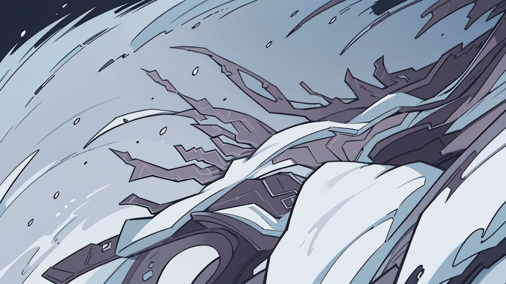
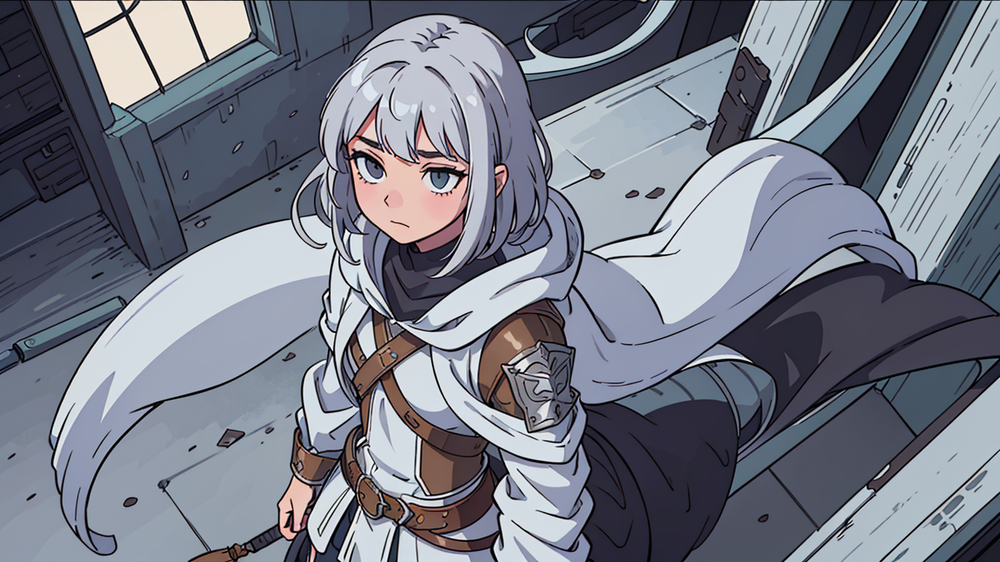
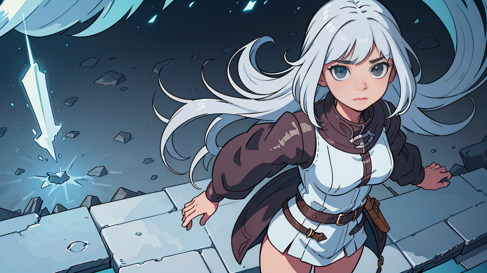
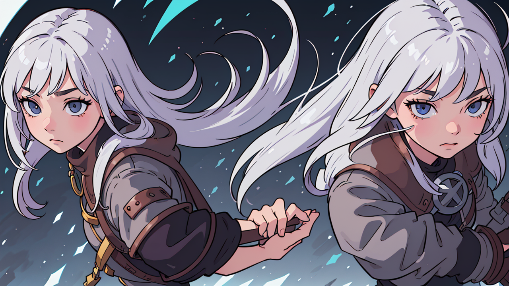
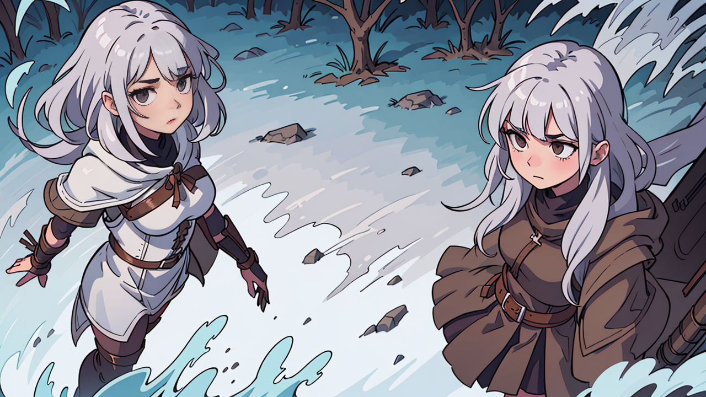
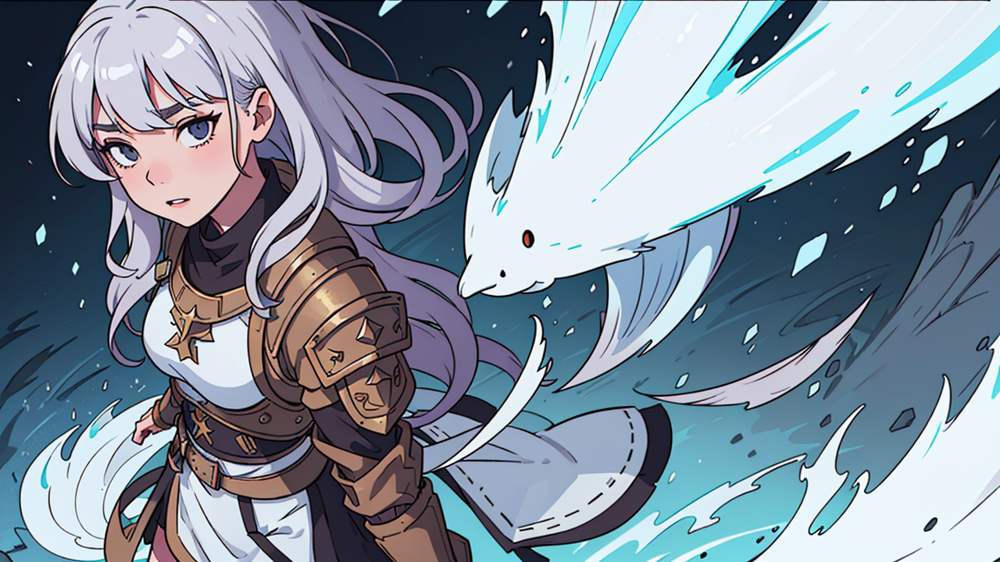
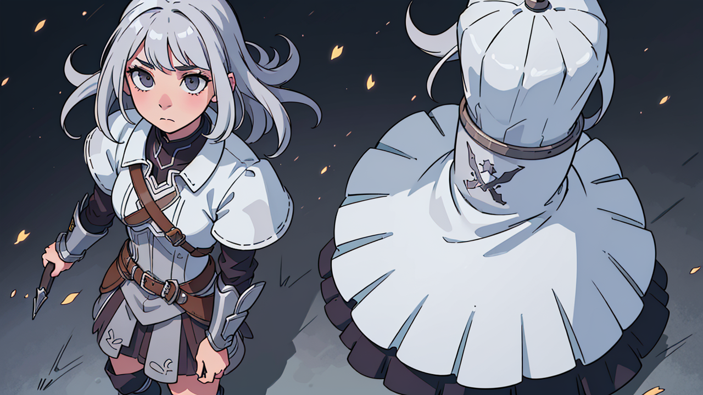
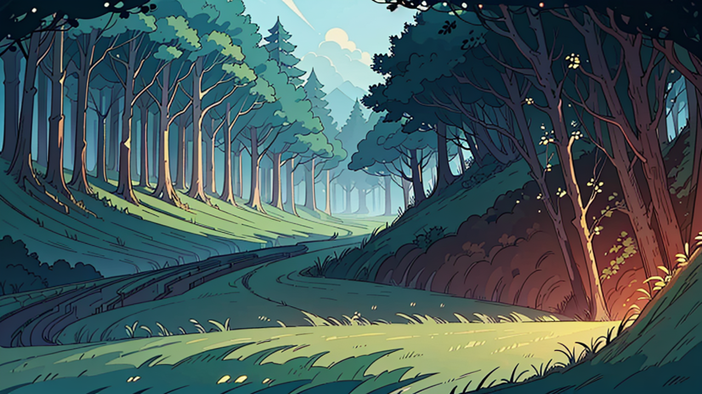
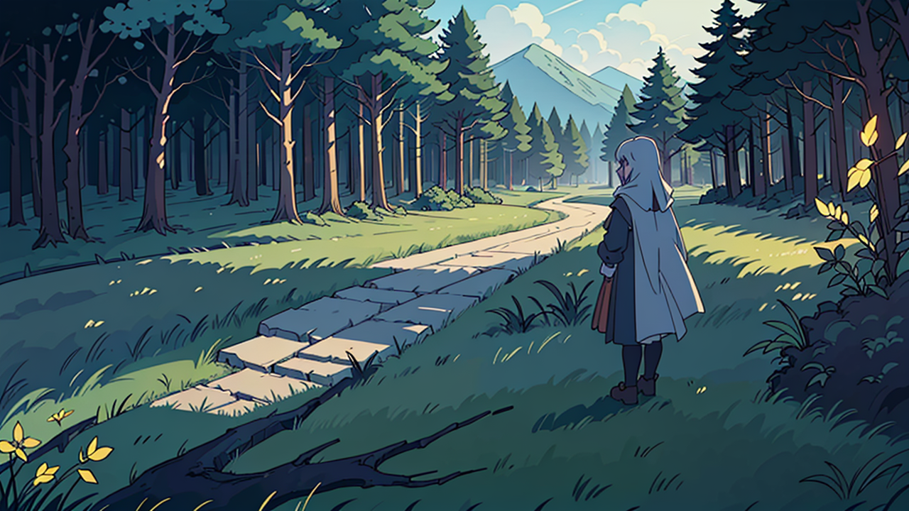
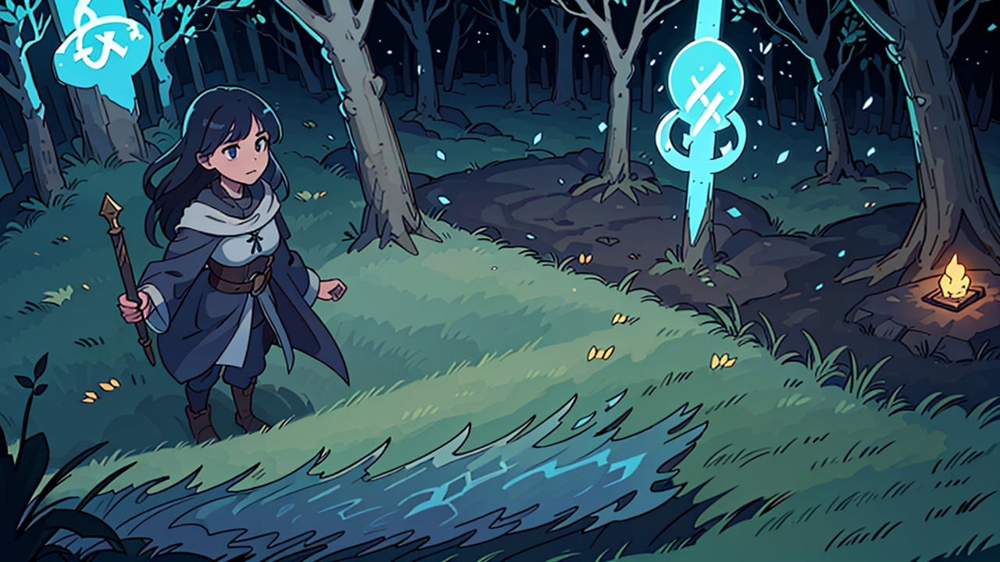
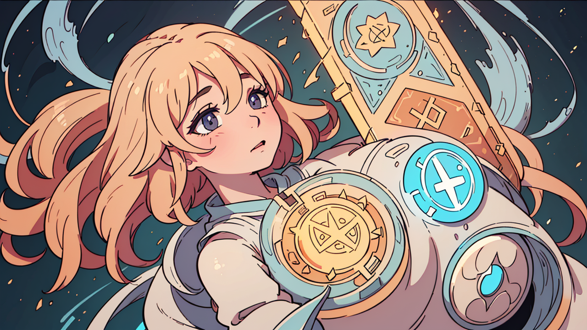